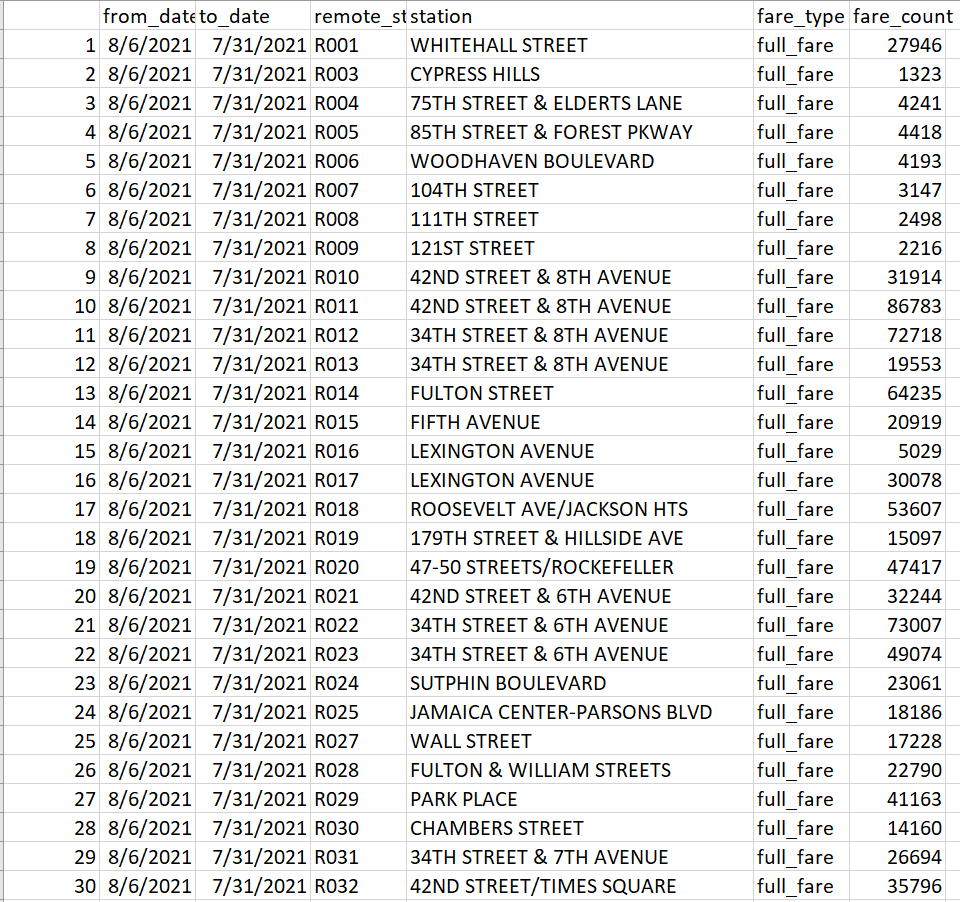
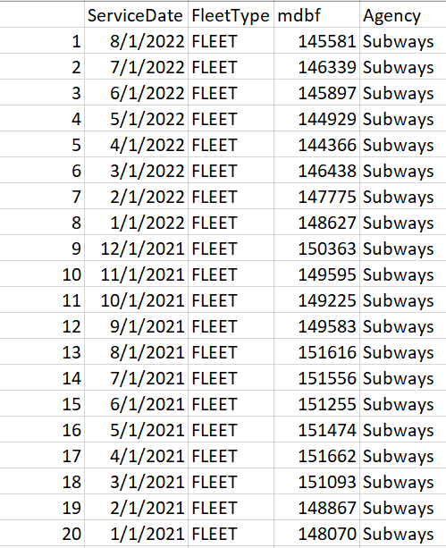
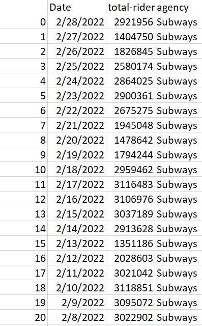

In order to have useful data for a proper analysis of the heavy rail transport of NYC, the data gathered in the previous tab must be cleaned. This entails reshaping and modifying the format of the data to be in a more appropriate manner for exploratory data analysis and deeper machine learning analyses. The raw data that was cleaned can be found in both the Data Gathering tab as well as in this project's Github repository folder. Modified data files will be available for download in their respective section below when applicable. All code scripts that were used to clean the accompanying data sets and produce the modified data sets can be found in a Github repository folder here. The subsequent cleaned data set can be found in the modified data folder in the GitHub repository here
Metro-North and LIRR Service ReliabilityFrom a cursory look at the data gathered in the data gathering section of this project, it is apparent that the on-time performance data and delay data for the LIRR and MNR share two common column names and values within: Service Date and Agency. Additionally, these two data sets share similar topic, and thus it is appropriate that they may be combined. The cleaning and combination of these data sets was accomplished using an R script that can be downloaded in the data cleaning section of the GitHub repository. From an overall look at these two data sets, there are clear discrepancies between the depth of record-taking for the LIRR compared to the MNR records. Several columns of both the on-time performance data set and delays data set only contain values for LIRR observations. Thus, both data sets were separated into separate data sets, each for LIRR and MNR respectively. Each of these (now four) data sets were cleaned individually. The less extensive data of the MNR data sets necessitated that several columns be dropped due to only containing missing values (i.e., NA values), such as columns about LIRR specific delays and numbers of specific incidents. Both the LIRR and MNR subsets of the on-time performance data set contain rows that outline the patterns of on-time performance for specific routes of each agency as well as summaries for the whole respective systems, while the subsets of the delays data set is solely comprised of system total data. Thus, rows that only contain observations regarding specific routes of the MNR and LIRR were removed, and thus only the data for system total (i.e., aggregation of the individual routes) on-time performance remained. Additionally, the data regarding AM-Peak on-time performance contained an excessive amount of missing values (all dates after 2018 have missing values in this column), and thus this column was dropped from both the MNR and LIRR data sets. Subsequently, the respective MNR and LIRR sets were joined together such that an "overall" MNR and "overall" LIRR data set were generated, both pictured to the right. Finally, the service date column in these two data sets was not of a "Date" data type, and thus was typecast to that type. |
|
NYCT Subway Fare DataCritical to understanding the popularity and efficiency of the NYC Subway is data on use of MetroCards (fare cards) to enter the NYC Subway system as described in the data gathering section. Such fare card data was cleaned through an R script which can be downloaded at the GitHub repository at the top of this section. The first step of cleaning this data set was to remove rows that contained data that was not subject to the analyses of this project. The raw data set contains many rows that contain information about stations that are not part of the NYC subway stations, such as the PATH and some specific bus lines. Any rows containing observations of these non-subway stations were filtered out of the data set. Subsequently, types of fare cards that are not subject to subsequent analyses were also removed, such as passes specifically for bus services, the PATH, and/or airtrain exclusively. Subequently, the date columns were typecast from character type to "Date" to make further analyses more streamlined. Finally, this data set was pivoted into a tall format such that each station has multiple rows (observations) for the same date range, but each with a different fare card type and count (pictured right). These data were then saved to a .csv file which can be downloaded at the GitHub repository modified data folder. |
 |
NYCTSubway Tweet Data CleaningAs discussed in the data gathering stage, tweets were pulled from the @NYCTSubway twitter account regarding subway delays. On their own, the raw data extracted from these tweets using the Twitter API is not ready for proper analysis. The text of each individual tweet from the raw data frame was isolated and fed into a method called CountVectorizer. CountVectorizer takes in a list of documents, in this case tweets, and computes the frequency of different words/characters/terms across documents. The output of CountVectorizer is manipulated into a dataframe, known as a document term matrix, whose columns consist of all parsed out words/terms and each row consists of each tweet. Values within the data frame (numbered 0 or higher) constitute the number of times that a given word (column value) appears in a given tweet (row value). The process of creating a document term frequency matrix was applied twice for this project, and the Python code that accomplishes that can be downloaded in the GitHub repository data cleaning folder. The first implementation of CountVectorizer to the @NYCTSubway Tweet data found the frequency of all words in each tweet after certain stopwords (i.e., words that are just "noise" to the analysis and not useful) were removed. The first picture to the right is the head of the resulting document-term matrix for that data set. The second implementation focused on single characters in each tweet, such as A, B, C, etc. that are NYC Subway lines. The aim of creating this data set is to see the frequency of delays by train line as the NYCT lists out all lines affected by a given delay in their tweets. Thus, the full text of each tweet was reduced to only single characters that represent NYCT Subway lines. These were then vectorized and manipulated into a document term matrix, and the head of that data set is also pictured on the right. |
|
Mean Distance Between Failures DataThere are separate data sets for mean distance between failures for the Metro North and LIRR and for the NYC Subway, so these must be combined to make cross comparisons between the three agencies. These data sets were cleaned and merged using an R script present in the data cleaning folder in the accompanying GitHub repository. The MNR and LIRR data sets 2ere already in an appropriate format, and thus only column names were changed to match those of the NYC Subway MDBF data set. The NYC Subway data set contains the MDBF for each individual type of train used on the system, and overall MDBF for the fleet as a whole. This analysis is only concerned with the fleet-wide MDBF, so any MDBF for specific train types were dropped. These two data sets were then joined together, and the head of the resulting data frame is pictured to the right. Although not pictured, there are values in this data set for MNR and LIRR MDBF for the same time frames as the NYC Subway, but are not pictured due to space constraints. |
 |
Estimated Ridership DataThe data estimating the daily ridership across the three transit agencies that are the primary focus of this project (MNR, LIRR, Subways) are all within one data frame, but these data must be transformed into a format that is more conducive to further analyses. These data are initially in a "wide" format, where each day is an observation with a column each for the LIRR, MNR, and Subway daily estimated ridership, among other variables. This data set will only require estimated daily ridership statistics, so extraneous columns were dropped. Then, this data set was "melted" from a "wide" format to a "tall" format, where each day appears multiple times, but each of those same days has one observation for each agency (i.e., one row for LIRR, one for MNR, and one for the subways on the same day). The resulting data set is pictured here, and generated using a Python script in the accompanying GitHub repository |
 |